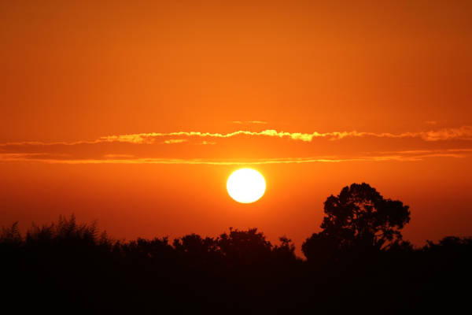

Turismo Para quem quiser
Descubra o Mundo do Turismo
Você está pronto para sair da rotina e viver uma experiência inesquecível? Bem-vindo ao mundo do turismo de aventura, onde cada viagem é uma oportunidade de explorar, desafiar e se surpreender. Se você é apaixonado por adrenalina e novas descobertas, este é o seu lugar!
Por que Escolher o Turismo de Aventura?
O turismo de aventura é perfeito para quem busca mais do que apenas relaxar em praias paradisíacas. É para quem quer sentir o coração acelerar ao descer uma montanha de bike, navegar por rios selvagens ou escalar picos impressionantes. Cada destino é uma nova aventura, cheia de histórias e desafios que vão além do óbvio.
Atividades para Todos os Gostos
Seja você um iniciante ou um aventureiro experiente, há uma atividade perfeita para o seu nível de habilidade. Quer explorar trilhas deslumbrantes? Ou talvez se jogar de paraquedas seja mais a sua cara? Não importa o seu estilo, o turismo de aventura oferece opções de tirar o fôlego:
- Escalada e Montanhismo: Desafie-se em paredões e montanhas icônicas.
- Mergulho e Snorkeling: Descubra o fascinante mundo subaquático.
- Rafting e Canoagem: Enfrente corredeiras emocionantes e rios tranquilos.
- Trilhas e Caminhadas: Explore paisagens naturais incríveis e conheça culturas locais.